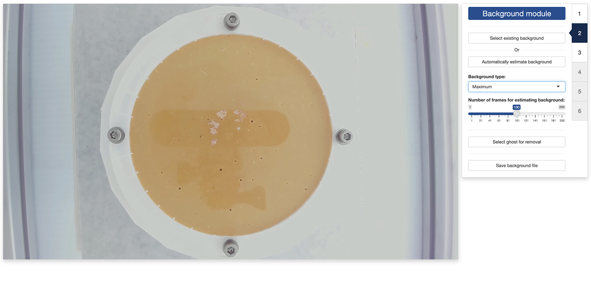

trackRai provides four apps to:
- generate a training dataset suitable for training a YOLO model (this tutorial);
- train a YOLO model using that dataset;
- use the trained model to track objects in a video;
- visualize the results of the tracking.
In this tutorial, we will discuss how to use the first app to automatically generate a dataset that you can then use to train a YOLO model. The idea here is to use traditional computer vision techniques to isolate single instances of the objects that you would like to track, as well as the background over which these objects are moving. We will then use them to create composite images with random arrangements of an arbitrary large number of these isolated objects. Using that approach, we can generate automatically a large number of training images for YOLO, without requiring any manual labelling.
Note: this approach only works well if the background of the video is stable, with, ideally, no camera movement and no lighting variations. Good tracking results are not guaranteed otherwise.
2.1 - Launch the preparation app
To launch the dataset preparation app, run the following in the R console:
This will open the app either in the viewer panel of RStudio and
Positron, or in your default internet browser. You can control where the
app is opened using the launch.browser parameter (see the
documentation of shiny::runApp() for more information).
2.2 - Tab 1: video module
Once the app opens, you will be presented with the “Video” tab. Click
on the Select video button and navigate to the video that
you would like to use for preparing the YOLO dataset. Once the video is
selected, it will appear in the left panel of the app.
Below the video is a slider that you can use to control the video stream. The slider has three handles:
- the green handle allows you to navigate through the video to display a frame of your choice;
- the two grey handles allow you to restrict the processing of the video to a range of frames in the video. This can be convenient when only a portion of the video is usable, for instance.
Once the video is loaded, the second tab of the app will become available and you can click on it to navigate there.
2.3 - Tab 2: background module
Once the video is loaded in memory, the first step of the process is to load or reconstruct the background over which the objects are moving.
If you already have an image of the background without the objects in
it, you can load it using the Select existing background
button. If not, you can attempt to reconstruct it by clicking on the
Automatically estimate background button.

If you choose to reconstruct the background, you can select one of
the methods of reconstruction using the Background type
dropwdown menu:
- “mean” uses the average value of each pixel as background
- “median” uses the median value of each pixel as background
- “min” uses the minimum value of each pixel as background
- “max” uses the maximum value of each pixel as background
These statistics will be computed using several equally-spaced frames
of the video. You can choose the number of frames used for this process
with the Number of frames for estimating background slider.
More frames tend to yield a better result at the expense of a longer
computation time.
If objects are still present in the reconstructed background image
(for instance, because they did not move during the recording), you can
attempt to remove them by clicking on the
Select ghost for removal button. Once you have activated
the ghost removal mode, you can draw a polygon around the object to
remove (just click around the object to create the corners of the
polygon). Once you are done drawing the polygon, hit the
return key on your keyboard and the app will try to replace
the object with its best estimate of the local background.
Finally, you can save the background picture for later use by
clicking on the Save background file button.
Once a background image is created/loaded, the third tab of the app will become available and you can click on it to navigate there.
Note: the ghost removal mode is very basic and may
not yield good results with complex backgrounds. Another option is to
save the background file with the ghosts and use a more advanced image
editing software to remove them (for instance, Photoshop’s
Remove tool can give much better results).
2.4 - Tab 3: mask module
The second step of the process is to load or create an optional mask. A mask can help restrict the area in which the app should look for objects and, therefore, make the final results more accurate. By default, the whole image is taken into account in the analyis.
If you already have a mask image, you can load it using the
Select existing mask button. If not, you can create one as
follows.
First, click on the Exclude all button to exclude the
entirety of the image from the analysis. Then, click on either the
Add polygon ROI or Add ellipse ROI buttons,
making sure that the Including tick box is selected.
If you clicked the Add polygon ROI button, you will be
able to draw a polygon that encloses the region of the image you would
like to include in the analysis (just click in the image to create the
corners of the polygon). Once you are done drawing the polygon, hit the
return key on your keyboard to set the region of
interest.
If you clicked the Add ellipse ROI button, you will need
to select five points that will define the periphery of the ellipse.
You can also define multiple regions of interests by incrementing the
ROI id counter before creating a new region.
You can create more complex masks by excluding parts of the image
selectively if you tick the Excluding tick box.
Finally, you can save the mask picture for later use by clicking on
the Save mask file button.
Once a mask image is created/loaded, the fourth tab of the app will become available and you can click on it to navigate there.
2.5 - Tab 4: segmentation module
The third step of the process is to determine a threshold that differentiate the objects from the background. In this tab, what you are seeing is the difference between a given frame of the video and the background image loaded/created earlier.
By default, the app considers that the objects to detect appear
darker than the background in the video frames. If that is not the case,
you can tick the Ligther tick box if the objects appear
lighter than the background in the video frames, or the
A bit of both tick box if the objects have parts that are
darker than the background and others that are lighter.
You can then manually select a difference threshold by using the
slider at the bottom of the tab, or let the app decide for you by
clicking the Autothreshold button and selecting one of the
automatic threshold detection methods provided under the dropdown menu
on the right of the button.
Once a threshold has been set, the fifth tab of the app will become available and you can click on it to navigate there.
2.6 - Tab 5: identification module
The fourth step of the process is to isolate single instances of the objects in a subset of equally spaced frames in the video.
First, you will need to set a buffer around each of the detected objects. The buffer should be large enough so that each object is completely enclosed in its corresponding rectangle. Do not worry if several objects are enclosed in the same rectangle; what matters is that enough single instances are clearly separated from the others. You can navigate through the subset of frames to check whether the selected buffer size works well across all of them.
Once the buffer size is set, you will click on the
Detect objects button and the app will compute the widths
and heights of all the detected objects across the subset of frames. You
can choose the number of frames to be used yourself; more frames will
provide better statistics at the expense of longer computation time.
Once the statistics are computed, their distribution will be plotted in
the sidebar.
By default, the app will attempt to determine the best statistics
that corresponds to single instances of the objects. The single
instances detected that way will appear as green rectangles in the video
frame, the others will appear as red/orange rectangles. You can navigate
through the subset of frames to check whether the selected statistic
ranges work across the whole video. In particular, you should make sure
that all selected instances contain one, and only one object. If that is
not the case, you can untick the Automatic object selection
tick box and manually change the ranges to eliminate these instances.
You can also manually change the status of an instance (selected or
unselected) by directly clicking on it with your mouse cursor.
Once the objects have been selected, the last tab of the app will become available and you can click on it to navigate there.
Note: If you modify the buffer size or the number of images used to detect the objects after computing the object statistics, you will need to run the object detection again to take into account the new parameters.
2.7 - Tab 6: composite module
The final step of the process is to generate the training dataset itself. This will create composite images in which a set number of objects will be printed over the background image, at random locations and orientations within the boundary of the mask loaded/created earlier. This will also create the bounding boxes of the objects that YOLO needs to learn what the objects look like.
First, you will set the number of objects that will be included in each of the composite images. The number of objects should be high enough to result in a lot of random arrangements and overlaps so that YOLO can generalize better to situations where objects touch or overlap in the real video frames. You can also set a buffer zone to ensure that the printed objects do not overlap too much with your mask boundaries.
Next, you can add random noise to the composite images in order to increase the generalizability of the YOLO training. You can also add random gain and bias to change the contrast and luminosity of the the composite images for ever more generalizability.
To check the effect of each parameter on the resulting composite
images, you can click on the Generate test composite button
to generate one or more sample composite images.
Once you are satisfied with the results, you can set the number of images that will be used for training, validating, and testing the YOLO model that you will train in a separate app. A recommend breakdown is to reserve 70% of the images for training, and 15% for validating and testing, respectively.
You can then generate the training dataset by clicking on the
Generate YOLO dataset button. This will bring up a file
manager and you can select the location where you would like the dataset
to be saved (a folder named YOLO will be created at that
location). Once the process terminates, you are done and you can close
the app. The next step will be training
a YOLO model.
Note: When generating the training dataset, you can also ask the app to create a reframed video by ticking the tick box at the bottom of the sidebar. This will prepare a video file in which everything outside the mask will be removed and the dimensions of the image will be set to optimize the video processing done by YOLO during the tracking phase. This is completely optional and will add some processing time, but performing the tracking on the reframed video can be up to twice as fast as on the original video, depending on the number of objects to track.